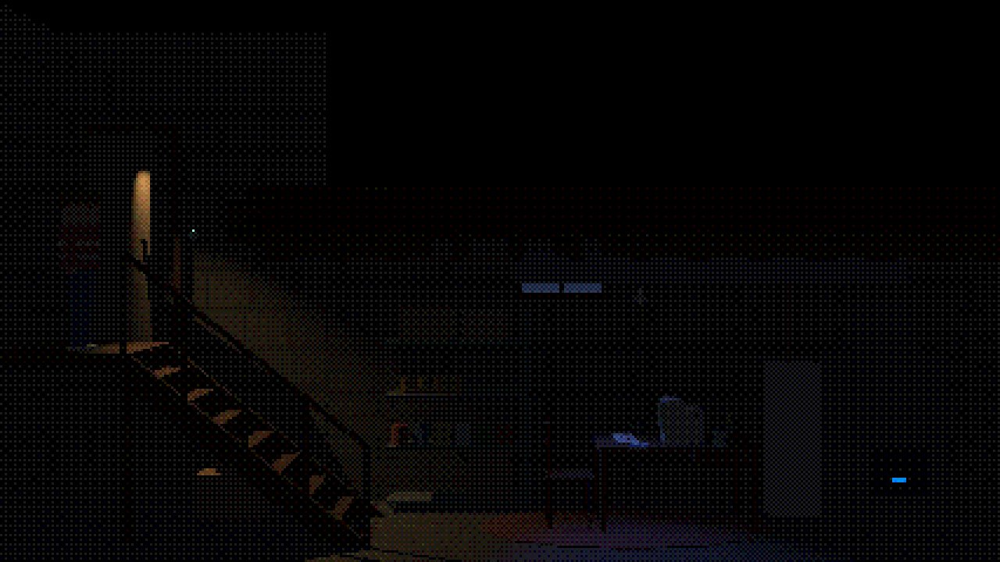
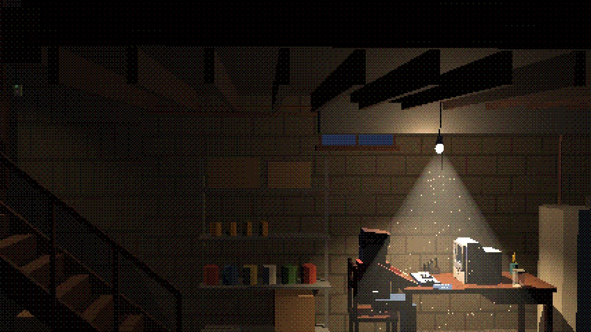
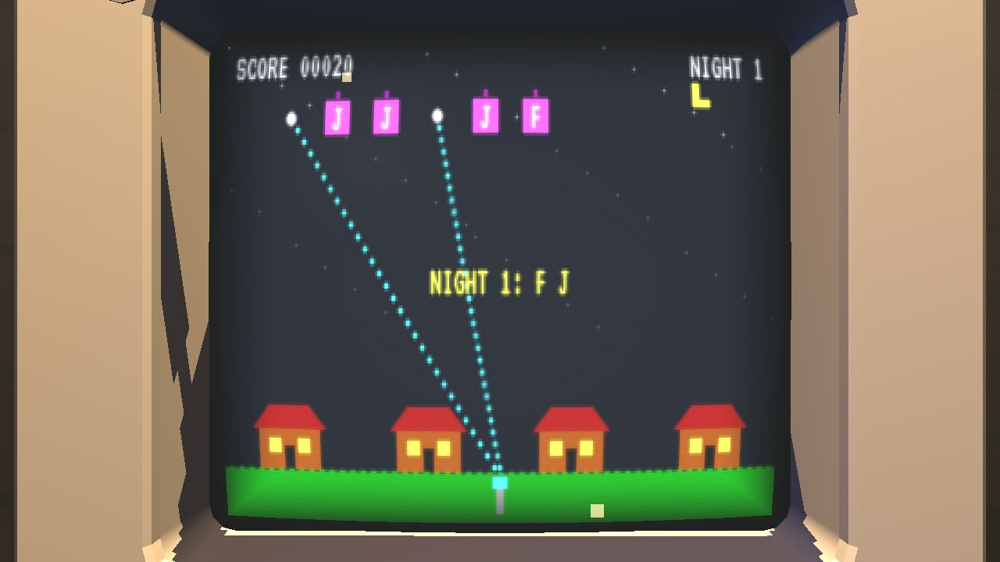
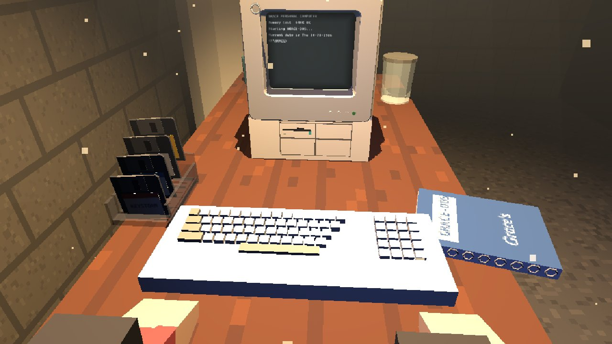

The office under Abbie's café. Aunt Grace's basement, 1986: a bare bulb over a desk, her computer, a box of disks. It's a 2.5D side view, built in 3D. You turn on the light, walk down, sit, and the camera swoops in to the screen. The computer works.
Your photo on the left, the model from the same camera in the middle, and the model to turn yourself on the right. It's built from parts: the shell profile, the grey bezel with its sloped screen funnel, a curved tube face, the drive plinth with the floppy and three blank bays, and the side vent ribs. 57 parts, 1,296 triangles. The badge is a plain disc with no maker's logo.
Still off: the front bays sit a little lower than in your photo, and the bezel corners are tighter.
How it plays

1. Dark. The hall light spills down the stairs and the switch glows.2. Click. The bulb flickers on and buzzes. Dust turns in its light.

3. Walk down, sit. The camera swoops round your shoulder.

4. The screen up close: curved glass, scanlines, glow.
Tap anywhere to walk; tap the desk to sit. Nothing is written on the screen, and there are no buttons.
At the screen, type. A phone brings up its keyboard when you tap the glass. Tap the edge to look down at the desk; tap the floor or press Esc to stand.
The pixels are big in the room and sharp at the screen. The picture sharpens as the camera arrives.
Everything you hear is in the room: the switch, the bulb's buzz, wood stairs and concrete, the chair creak, the drive and the keys.
The disks and the ten coins

At the desk: Grace's disks, the keyboard, her manual and the coin jar.
Tap a disk and it flies into the drive, and the computer runs it: KEYSTORM, Grace's toast recipe, an empty disk, and the gold one. The gold disk shows an 8-bit Abbie's World coin, and the coin drops into the jar on the desk. There are ten coins. Each one you find lands in the jar, so the jar shows how many you have.
The gold disk
Reaching night 5 in KEYSTORM
Typing the word Grace's note hints at
Behind the furnace door
In the yellow paint can
Under the rug
In Grace's manual
In the box under the stairs
On the window sill
In the pencil mug
The games study
The three games you remember, studied for how they felt, then ours in their spirit. Style yes, expression never: no copied code, art, words or characters. KEYSTORM is built and playable. The other two wait for your pick.
Studied · Typing Tutor III, Letter Invaders (Kriya Systems, 1984)
A typing course with an arcade game inside. Letters drop toward you and you type them to shoot them down. It starts with the home row and adds keys in a fixed order as you get them right, then scores letters, shots, hits and accuracy, with a bonus for streaks. The game ramps up only when you're ready for it.
KEYSTORM
BUILT · PLAYABLE
Our version. Letters drift over a little town at night. Type one and the lamp on the hill zaps it. A letter that reaches the roofs puts a window out. Each night teaches one more patch of keyboard, starting with F and J, and the march speeds up when your hits are good.
Studied · Gunship (MicroProse, 1986)
A helicopter simulator. Its tension came from hiding behind hills and popping up, from damage that builds until you autorotate down, and from resupply pads that remove the time limit. A long career of ranks and medals kept you flying.
ROTOR RANGER
DESIGNED · YOUR PICK
Ours, PG. A rescue helicopter over a valley drawn in 16 colours. You pop up over ridges to spot campers, drop water on brush fires, ferry hikers home and refuel at pads. The cockpit has round gauges, and you earn ranger badges. Nobody gets shot.
An illustrated text adventure. A picture of each place sits over a line where you type what to do. It understood fuller sentences than earlier games, gave you puzzles from the first room, and had you collect gems while climbing a tall building full of rogues.
CLOCKTOWER
DESIGNED · YOUR PICK
Ours, with our own hero and no Marvel characters. You're a small inventor climbing a town clock tower to find twelve lost gears. Each floor has a picture on top and the typed story below ("LOOK", "TAKE OILCAN", "CLIMB ROPE"). The puzzles are mechanical and kind.
The machine and what came with it
The computer
Modelled on the 1987 IBM PS/2 Model 25: an all-in-one with an 8 MHz 8086, a 12-inch mono or colour screen (MCGA), and one 720 KB 3.5-inch drive. In our world it's Grace's machine, with a plain badge.
The keyboard
A full-size beige board with function keys and a number pad, built low-poly from rows of keys. In the photo-matched set it is next after the machine.
The 3.5" floppy
Shell with the cut corner, sliding metal shutter, steel hub, label and write-protect slide. 90 × 94 × 3.3 mm. Turn it.
The manual
A spiral manual for GRACE-DOS with "Grace's" on the cover in pen. Next: pages you can open and read, written by us in that 1980s voice.
GRACE PERSONAL COMPUTER
Memory test 640K OK
C:\GRACE>DIR
KEYSTORM EXE 24576 10-23-86
README TXT 190 10-23-86
Design card
What the player needs to know: "The light's on, the computer's on, I found a coin."
How would the character know? The bulb glows and buzzes; the screen lights the desk and the drive chatters; coins land in the jar.
Mode: diegetic everywhere. The screen's text is part of the world, on Grace's computer. There's no overlay.
Who it's for: the player. The scene also tells the director whether the light and the computer are on.
The whole scene adapts: one switch changes the light, the dust, the hum and the hall light together.
Tour: no, for now. It joins the tour when the café's office door leads here.